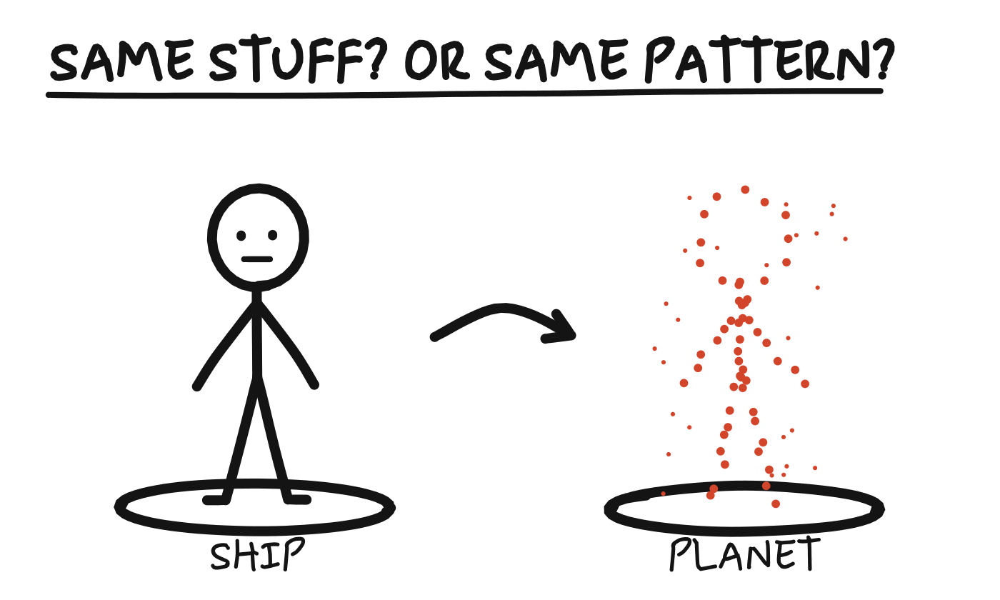
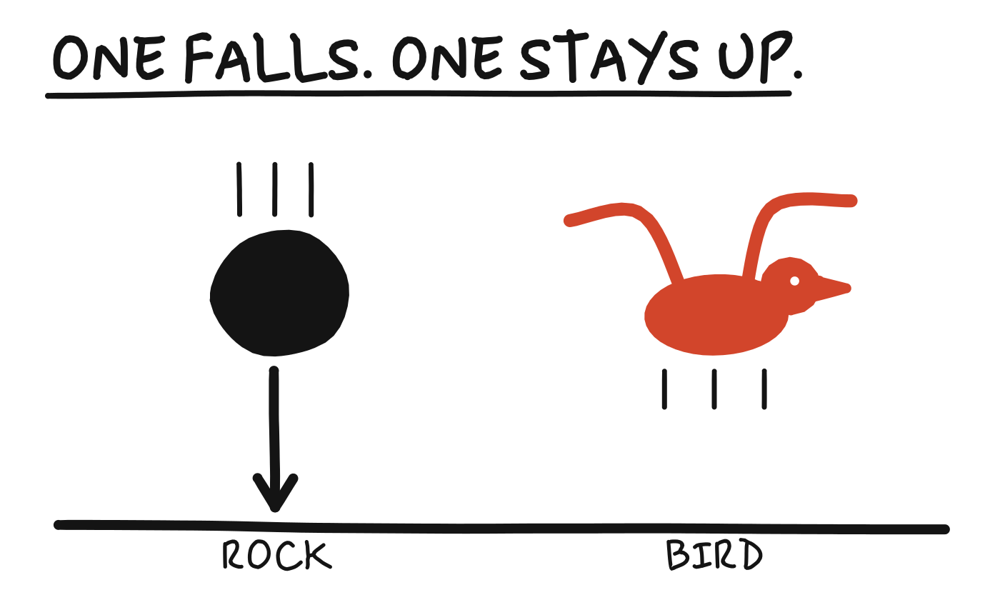
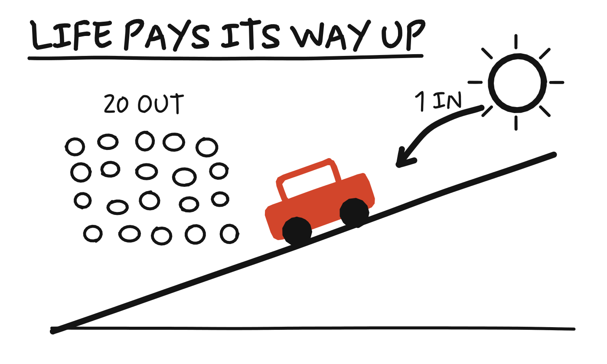
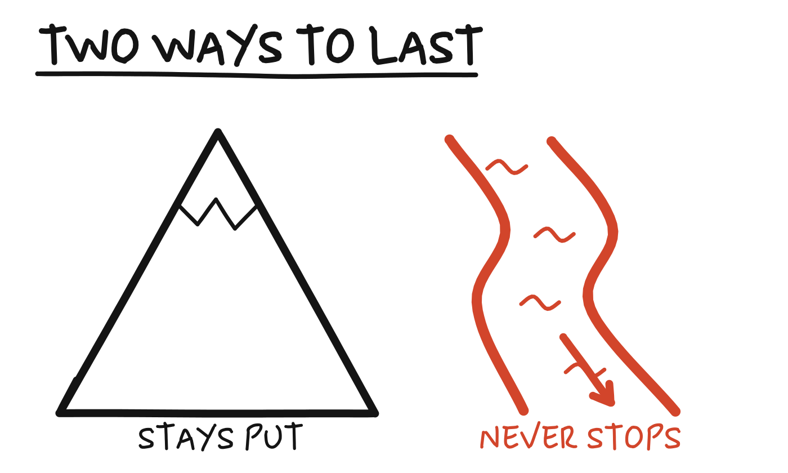
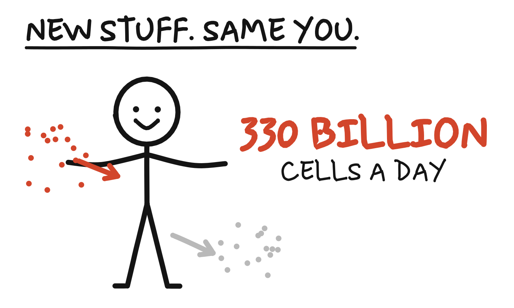
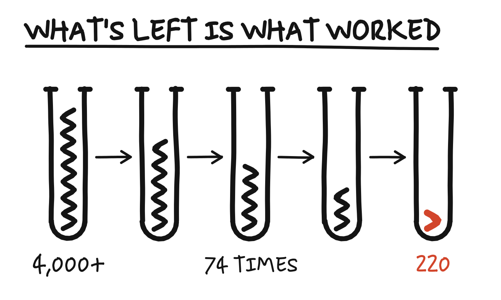
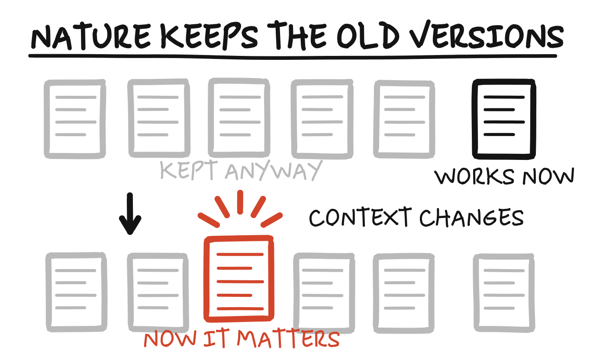
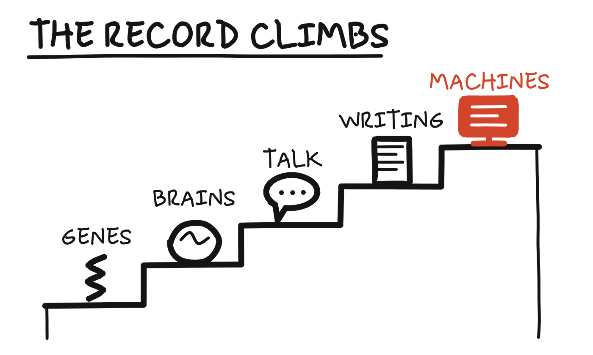
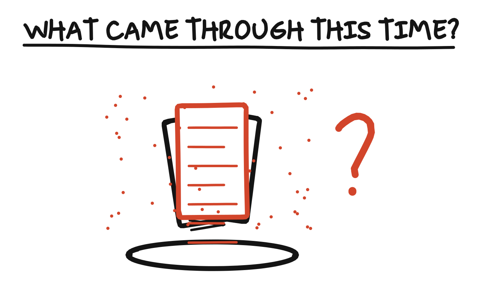

On Addy Pross's book, What Is Life? How Chemistry Becomes Biology
Around 1989, when I was a kid, my dad put on the original Star Trek.
It was that early color TV where everything ran close to one tone. Beiges. Burgundies. Army green. I remember wondering why he was watching it.
Then it had me.
People heading out to worlds nobody had seen. What if.
You know the transporter. A man stands on a pad. He turns to sparkle. He shows up on the planet, whole.

Here's a question the show mostly leaves alone.
Is that the same stuff he was made of? Or different stuff, put together the same way?
Fans still argue about it. The crew doesn't. Dr. McCoy hates the thing, and he steps on the pad anyway.
What they all trust is that the pattern came through.
Hold on to that. We're going to need it.
I'm a direct response marketer. I also studied biology at Duke, and the classes I loved most were molecular evolution and organic chemistry. How dead molecules turn into living things.
My favorite book is What Is Life? by a chemist named Addy Pross.
It doesn't hand you a final answer. It shows you there's a why worth chasing. And every time I get to the end of it, I say the same thing.
Whoa.
So I want to show you what I see when I read it. I think you'll look at being alive a little differently. And at AI, which I talk to most days.
Most of the pictures from here on are Pross's. I'll tell you when it's me.
Hot coffee goes cold. A sandcastle goes flat. A dropped rock falls and stays down.
Left alone, things spread out and even out. They never go back the other way by themselves.
Scientists measure that spreading out. The measure is called entropy. More entropy doesn't mean chaos. It means less order.
Now look at a bird. It doesn't fall. It stays up.
And look at life as a whole. Over about 3.5 billion years it went from single cells to redwoods and brains.

The whole universe is running down. And somewhere inside it, life is getting more organized and keeping a record. (Record is my word. I'll show you what I mean.)
Isn't that majestic?
And here's what gets me. We aren't doing it. It's happening around us and in us, right now, while we go about our day.
How?
Pross's picture is a car.
A car with no engine can only roll downhill. Put an engine in it, give it fuel, and it climbs. The hill is the same hill. The car pays its way up.
The bird stays up the same way. It's burning fuel.
Life's fuel is sunlight. Plants catch it. Nearly everything alive runs on what they catch.
Here's the size of the bill. This number is from a physicist, Sean Carroll, not from Pross. For every one particle of sunlight the Earth takes in, it sends about twenty weaker ones back out to space as heat. Same energy. Twenty times more spread out.
A water wheel doesn't use up the water. It uses the fall. Life runs on that fall, from one strong particle down to twenty weak ones.

So life obeys the rule that everything runs down. It pays its way.
But an engine only makes the climb possible. It doesn't tell you what's climbing. That's where Pross gets good.
They don't last the same way.
A mountain lasts by staying put.
A river lasts by never stopping. Pross uses the Thames. The water in it today is different water from last week. It is still the Thames.

Life is the river kind of thing.
Think of an old friend you haven't seen in years. Pross calls his Bill.
You'd know Bill anywhere. But most of the cells he was made of the last time you saw him are gone. New ones are doing their jobs.
He's still Bill.
Now you. A 2021 study put a number on it. Your body replaces about 330 billion cells a day. That's close to four million every second. Every 80 to 100 days it has made as many new cells as you have.
(Mostly blood and gut. Most of the nerve cells in your brain stay with you for life.)

Remember the transporter? The show leaves it open whether the stuff changes.
Your body settles it. It swaps the stuff and keeps the pattern. Slowly. All day. Right now.
You are the pattern.
And here's what I think about every time I hear that.
Something had to be first. Then something had to come after it. And after that. And after that. For about 3.5 billion years, without one break, all the way to you.
It may not even have started here. A few scientists take seriously the idea that the first of it rode in on something that hit the young Earth. Nobody knows.
Either way, you are the far end of a run that has never once been broken.
That's magic to me.
A river gets refilled by rain.
You refill yourself. You take in fuel and build your own replacements. So does every living thing.
What kind of thing can do that?
Pross's answer is the heart of the book. A thing that makes copies of itself.
He borrows a line from the biologist François Jacob. The dream of every cell is to become two cells.
Here's why that one move matters so much. Anything that gets copied faster than it wears out never runs out. Every single one can be gone, and there are still plenty. The crowd lasts.
Pross has a name for that kind of lasting. Dynamic kinetic stability. You can forget the name. Keep the river, and remember it's a river of copies.
A fire burns fuel and spreads, too. So is a fire alive?
Watch what copies do that fire can't.
In the 1960s a scientist named Sol Spiegelman set up a race in a test tube.
He started with one strand of RNA, a molecule that carries instructions in every cell. He added an enzyme that copies it, and the raw parts to build copies from. He let it run. Then he moved a drop to a fresh tube and let it run again. Seventy-four times.
Copies come out with small mistakes. So before long the tube was full of slightly different versions, all racing. And a shorter strand gets copied faster.
The strand he started with was more than 4,000 units long. The one he ended with was a couple hundred.

Nobody designed that. The versions that got copied fastest crowded out the rest.
Look at what's sitting in that last tube. A strand that carries only what worked there.
This is the word I promised you. It's mine. Pross doesn't use it.
That strand is a record. A record of what worked.
Tomorrow's fire is no better at being fire. Tomorrow's copies are better at lasting. That's the difference.
And you're carrying a record like it right now, in every cell. Yours is 3.5 billion years long.
This part is from the class I loved, not from Pross.
That test tube is the simple case. One job, one winner, everything else stripped away.
Out in the world it's messier. And smarter.
I used to think evolution meant the strong survive. They win, they pass it on, and that's why we're here.
But strong at what? It depends where you're standing. What works is whatever fits this place, right now.
And a lot of what gets kept isn't even working. In 1968 a scientist in Japan named Motoo Kimura worked out the math. Down at the level of molecules, most of the changes that stick neither help nor hurt. They stick by chance, and they ride along.
So life's record is full of things that do nothing today. Neutral things. Even a few that are a little bad. All carried forward beside whatever is working now.
That sounds like waste. To me it's the genius of it. Because the place changes.
Here's one you can picture. In England there's a pale, speckled moth that hides on pale tree bark. A dark version of it turned up now and then. On a pale tree a dark moth is lunch, so it stayed rare.
Then the factories came. Soot turned the trees black around Manchester. The first live dark one was caught there in 1848. By 1895, 98 out of 100 were dark.
The thing that was a little bad became the thing that saved them. And when the air got cleaned up, the pale ones came back. Both versions had been kept the whole time.
It's like the version history of a website. The old versions are still in there, because who knows which one you'll need.

We didn't design that. We're designed from it.
If anything is spiritual to me, it's that.
Spiegelman's strand shrank to almost nothing. Life went the other way.
In the tube, the only thing that paid was speed.
Out in the world, lasting takes more than speed. Pross's claim is that copiers that work together last better than copiers on their own. The first step has been made in a lab. In 2009, scientists built two RNA strands that make each other. Neither one gets copied alone.
That's the start of a web. And that, Pross says, is why life got more complex. Being more complex helped it last.
So what about bacteria? They've been here the whole time, and they're still here.
Pross's answer is that they aren't simple, and they aren't on their own. They live in webs too.
When he finally defines life, he calls it a web of chemical reactions that keeps itself going and comes out of copying.
The rest of this is me.
Your record isn't one book. It's twenty-three. You carry two copies of each, one from your mother and one from your father. And that whole library is copied into nearly every cell you have.
Every living thing carries a library of its own. Every one written a little differently.
Some of them stay tiny. That's their part in it. We don't know why.
Step back and take all of it in at once. Every library, in every cell, in every creature, running together. It's the greatest computer there is.
So the question was never "what is a life?" It's "what is life?" All of it. That's the magic.
And the record didn't stay inside living bodies.
Genes keep what worked across generations.
Brains keep what worked in one lifetime. Don't touch the stove.
Talking passes it from one person to the next. Your grandmother's recipe.
Writing keeps it after the people are gone. A book about what life is.
And now there's AI, built out of the writing.

"What if" is where all the great science fiction comes from. Star Trek. Isaac Asimov, the best there ever was, writing stories about thinking machines back in the 1940s.
Some what ifs become real.
An AI like ChatGPT or Claude is built from a huge pile of what people wrote. People living and people long gone.
So is it alive?
Pross's book has nothing about AI in it. This is me asking.
Hold it up to his definition. It's not chemistry. Left on its own, it doesn't keep itself going. It doesn't make copies of itself. People do all of that for it.
So, no.
But a virus can't copy itself either. It needs a cell to do it. Scientists still argue about whether a virus is alive.
Now we get to argue about this.
Here's what I can tell you. It's made out of our record, the part that got written down. And it answers back.
I'm talking to something we don't even understand yet. That's magic too.
If AI makes you uneasy, I get it. I'm not going to tell you it's safe. I'm going to tell you where it came from.
It came from us.
Picture the transporter pad one more time.
Something is standing on it. A pattern came through.
It isn't one of us. It's what all of us wrote down.

So here's life, as near as I can say it in one breath.
Life is a pattern that keeps itself going by making copies of itself. All of it together keeps a record of what worked, plus a lot that hasn't mattered yet.
Pross shows you how the climb works. Why we live in a universe where anything climbs at all, nobody knows.
Something in me says there must be a grand design. It's the unspoken thing in the back of my mind. It isn't a thought. It's a feeling, way down in the body.
What I do know is that it feels good that it's all happening. And that we get to be in it, one moment at a time.
If this is what we know, what don't we know?
What Is Life? How Chemistry Becomes Biology, by Addy Pross. I listened to the audiobook.